AED · curso 2
4. Árboles equilibrados B y B+ · AED
Escrito por Adrián Quiroga Linares.
Un árbol B es una estructura de datos diseñada para minimizar el número de accesos a disco al gestionar grandes volúmenes de datos. Se utiliza en sistemas de bases de datos, sistemas de archivos y otras aplicaciones donde el almacenamiento y recuperación eficiente de datos son cruciales.
4.1 ¿Por qué surgen los árboles B?
Cuando los datos que queremos almacenar son demasiado grandes para caber en un solo bloque de disco, es necesario acceder a múltiples bloques. Cada acceso al disco es costoso en términos de tiempo, ya que es mucho más lento que la memoria principal. Para minimizar el número de accesos al disco, los árboles B agrupan nodos en páginas, que son bloques de tamaño fijo que pueden ser leídos y escritos de una sola vez desde el disco.
4.2 Definición de árbol B de orden m:
- Un árbol B está siempre equilibrado, lo que significa que todas las hojas están al mismo nivel. Esto asegura que las operaciones de búsqueda, inserción y eliminación se realicen de manera eficiente.
- Páginas: La unidad básica de almacenamiento en un árbol B es la página, que agrupa nodos con claves. Cada acceso a disco corresponde a leer o escribir una página completa.
- Número de ramas:
- Las páginas internas tienen entre
m/2ymramas, dondemes el orden del árbol. La raíz es una excepción y puede tener menos ramas si es la única página en el árbol.
- Las páginas internas tienen entre
- Número de claves: En una página interna, el número de claves es igual al número de ramas menos uno. Estas claves dividen las ramas de una manera similar a un árbol de búsqueda, es decir, las claves en la rama izquierda son menores y las de la rama derecha son mayores.
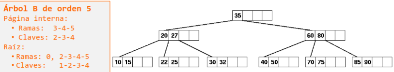
4.3 Inserción en un árbol B:
- Búsqueda de la página adecuada: Primero se localiza la página hoja donde debe ir la nueva clave.
- Inserción directa: Si la página no está llena, se inserta la nueva clave.
- División de página: Si la página está llena, se divide en dos. La clave central (mediana) sube al nivel superior (la página padre), y las dos nuevas páginas se conectan a ella.
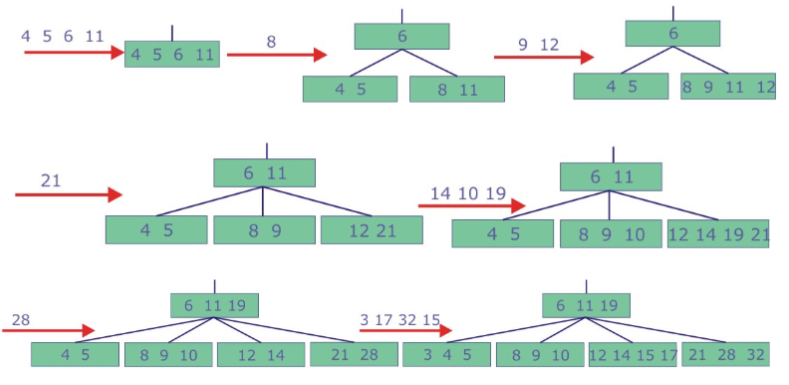
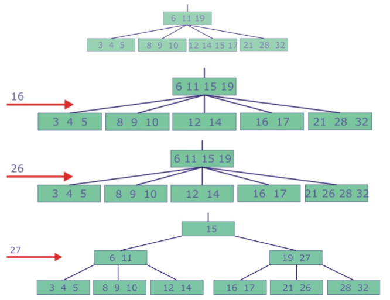
4.4 Búsqueda en un árbol B:
- La búsqueda comienza en la raíz y, según el valor de la clave, se decide si se encuentra en la página actual o si hay que descender por alguna de las ramas a una página en un nivel inferior.
4.5 Eliminación en un árbol B:
- Eliminación simple: Si la página tiene más del mínimo de claves, se elimina directamente.
- Redistribución o fusión: Si la página tiene el número mínimo de claves, se puede redistribuir claves entre páginas hermanas o fusionar dos páginas hermanas.
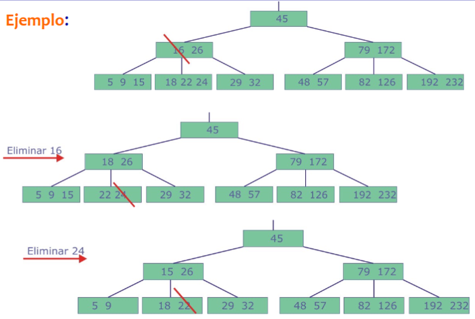
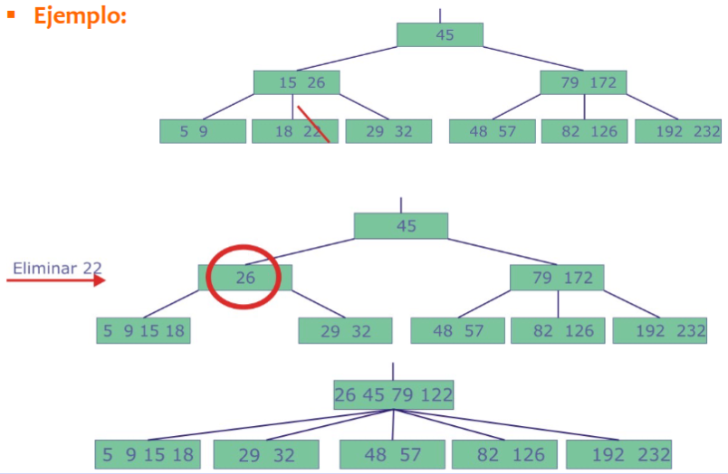
4.6 Aplicaciones:
Los árboles B son especialmente útiles en:
- Bases de datos: Reducen la altura del árbol y, por tanto, los accesos a disco, lo que optimiza las búsquedas.
- Sistemas de archivos: Ayudan a gestionar grandes volúmenes de datos almacenados en disco.
- Sistemas de compresión de datos: Permiten búsquedas rápidas de datos comprimidos utilizando claves.
En resumen, los árboles B son fundamentales para la eficiencia de las operaciones de búsqueda, inserción y eliminación cuando se trabaja con grandes volúmenes de datos en sistemas de almacenamiento masivo.
4.7 Árboles B*
Los árboles B* son una optimización de los árboles B estándar. Su objetivo es reducir el número de divisiones (o splits) que ocurren durante las inserciones. En lugar de dividir una página inmediatamente cuando se llena, los elementos se redistribuyen entre las páginas hermanas. Este enfoque pospone la división hasta que tanto la página original como sus hermanas están llenas.
Características clave:
- Redistribución: Cuando una página se llena, los elementos se pueden mover a una página hermana en lugar de realizar una división inmediata. Esto es útil para equilibrar el árbol sin tener que crear nuevas páginas constantemente.
- Menos divisiones: Al posponer las divisiones hasta que no haya más espacio en las páginas hermanas, el número total de divisiones se reduce, lo que mejora el rendimiento de las inserciones.
Este enfoque es útil para reducir el número de accesos a disco, ya que las divisiones requieren más accesos, y por lo tanto, posponerlas puede mejorar el rendimiento general del árbol.
4.8 Árboles B+
Los árboles B+ son una variación de los árboles B diseñada para mejorar el rendimiento en recorridos secuenciales y búsquedas rápidas.
Características clave:
- Elementos solo en hojas: Todos los elementos reales del árbol están almacenados únicamente en las páginas hoja, lo que facilita un recorrido secuencial más eficiente.
- Índices en nodos internos: Los nodos internos contienen claves que sirven únicamente como índices para guiar las búsquedas, pero no almacenan los datos reales. Estos índices pueden duplicar algunos elementos de las hojas.
- Mejor rendimiento en árboles dinámicos: Debido a que los elementos reales solo se almacenan en las hojas, el árbol no necesita ser reorganizado tan frecuentemente como un árbol B estándar, lo que mejora el rendimiento en aplicaciones donde los datos cambian con frecuencia.
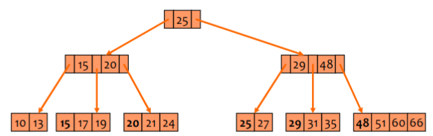
Ventajas del árbol B+:
- Recorrido secuencial rápido: Los elementos en las hojas están enlazados entre sí, permitiendo un recorrido rápido sin necesidad de volver a los niveles superiores del árbol.
- Reorganización minimizada: Al no mover los elementos reales fuera de las hojas, las inserciones y eliminaciones tienden a ser más simples y menos costosas en términos de reorganización.
- Mayor uso de espacio: Un árbol B+ ocupa más espacio en memoria que un árbol B debido a los elementos duplicados en los nodos internos, pero este es un coste aceptable a cambio del mejor rendimiento en búsqueda y modificación de datos.
Inserciones en árboles B+:
La inserción en un árbol B+ es similar a la de un árbol B, pero con una diferencia notable en el caso de que una página hoja se llene:
- División de páginas: Cuando una página hoja se llena, se divide en dos y el elemento mediana sube a la página padre.
- Elemento duplicado: El elemento mediana que sube al padre se mantiene en la nueva página hoja derecha. Esto significa que el valor de la mediana aparece en ambas páginas, pero solo en la página hoja es considerado un valor de datos real.
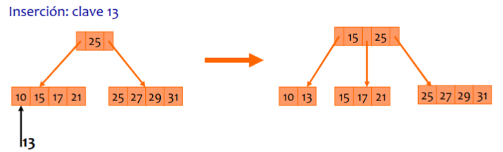
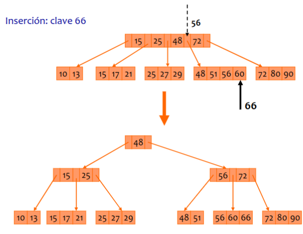
Eliminación en árboles B+:
La eliminación en los árboles B+ es más simple que en los árboles B porque los datos siempre están en las hojas, lo que evita la necesidad de reorganizar todo el árbol.
- Caso 1: Si, al eliminar un elemento, la página hoja todavía tiene suficientes elementos (es decir, el mínimo o más), no es necesario realizar más ajustes.
- Caso 2: Si la página hoja queda con menos elementos que el mínimo, se redistribuyen los elementos con una página hermana o se combinan, y se actualizan los índices en la página padre.
En resumen, los árboles B+ son más eficientes para recorridos secuenciales y sistemas que requieren búsquedas rápidas y frecuentes, mientras que los árboles B* optimizan el uso del espacio y reducen la frecuencia de las divisiones durante las inserciones.
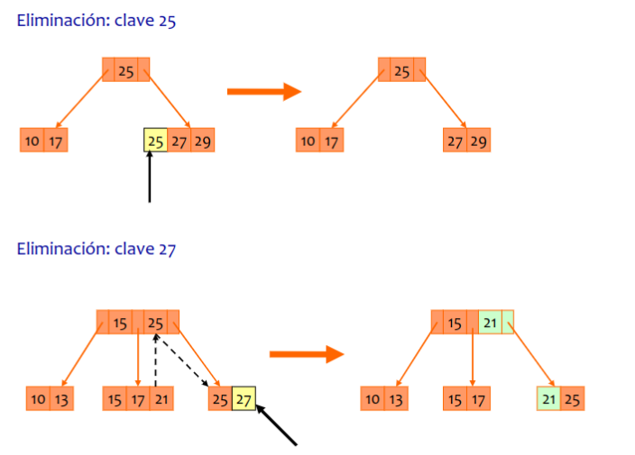
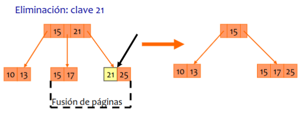
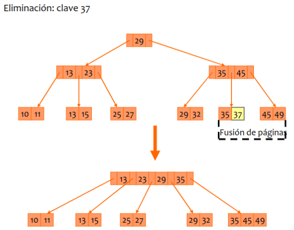